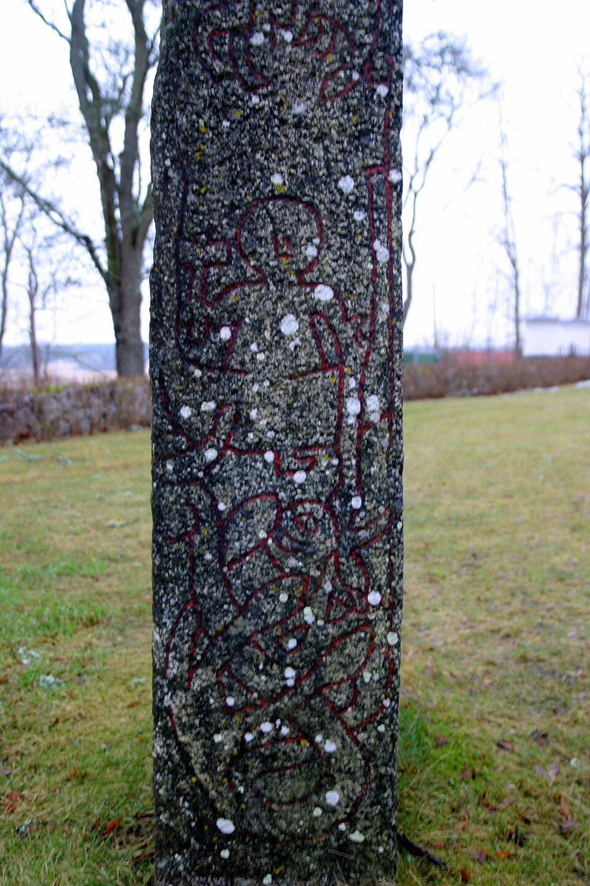

Существа
Не только боги и люди населяют миры: на дереве, в море, под землёй — существа, от которых зависит весь мир.
«Волк Фенрир рос быстрее любого другого существа; обычные верёвки рвались одна за другой, пока карлики не выковали из невозможного цепь Глейпнир.»
— по Снорри («Гюльфасингинья»; пересказ мой)

Существа
На дереве, в море, под землёй и у кромки огня водятся существа — от первого великана до вёльвы, которая знает конец.
Космос севера населён не только богами. У самого дерева сидят орлы и белка-переносчица сплетен; под корнями в Нифльхейме змей дракон, а в море вокруг Мидгарда кольцом лежит гигантский удав. Под землёй карлики выковывают чудеса для богов и великанов поровну, а на краю неба орёл Хресвельг взмахивает крыльями — и это называют ветром. И за всем этим стоит родословная: большинство «дурных» существ — дети Локи.
Фенрир — волк
Первое из трёх детей Локи и Ангрбоды — волка боги видели ещё маленьким и решили устранить. Он рос быстрее любого другого существа: обычные верёвки рвались одна за другой, пока карлики не выковали Глейпнир — цепь из невозможного. Боги устроили ловушку: лягать в цепи он согласился только если бог положит руку ему в пасть поручительством. Так поступил Тюр; поняв, что не вырвется, волк откусил ему руку. До Рагнарёка Фенрир сидел скованным Глейпниром; на исходе времён его отпустят (по песне — Гарм, пёс Хели), и тогда Один падает в его пасть.
Ёрмунганд — змей Мидгарда
Второе дитя Локи и Ангрбоды. Боги бросили младенца в море вокруг Мидгарда, но он рос вместе с ним — пока хвост не обхватил центр мира и не прикусил сам себя; так мир лежит в его пасти. Тор однажды выудил змея на лодку: на приманке-китовой голове; когда тот пошёл на дно, бог перерубил линию и отпустил. В Рагнарёк Ёрмунганд поднимется из моря; Тор убивает его, но сам гибнет от яда через девять шагов.
Слейпнир — конь Одина
Серый восьминогий конь — самый быстрый из всех ездовых: летит и по небу, и по морю. Ребёнок Локи: в облике кобылицы Лёд он понесла от карлика Лётра; когда обман раскрыли, боги разгневались, но коня оставили. На Слейпнире Один переезжает Бифрёст в Ванахейм и Йотунхейм — других скакунов так быстро между мирами не унести. В Рагнарёк именно на этом коне он выедет на разбитый мост.
Гулинбюсти — золотосвистящий вепрь
Золотой вепрь Фрейра, выкованный карликами Свартальфхейма: щетина его светится золотом, а скачет он быстрее мысли — по небу, по морю и сквозь любую погоду. На нём Фрейр едет на битву; в Рагнарёк именно на Гулинбюсти сражается с Суртом. Битва проиграна: меч свой бог давно отдал (Скирниру — за жену), и выходит в бой с рог-копьём из оленьего рога.
Рататоскр — белка
Белка, бегущая вверх-вниз по Иггдрасиле: переносит обиды от дракона Нидхёгга к орлу в кроне и обратно — гонец слухов между верхом и низом дерева. Мала, но первая сплетница мира: хочешь знать, что шепчут о тебе под корнями или над кроной — спроси Рататоскра. В списке обитателей дерева по Снорри он числится вместе с двумя орлами, Нидхёггом и головой Мимира. Чуда в его роли нет: сплетни переживут даже конец.
Нидхёгг — дракон под корнями
Дракон у корней Иггдрасиля в Нифльхейме: грызёт ствол изнутри и клевещет на всех, кто проходит мимо. По песне вёльвы он ещё и пожирает трупы — предателей и убийц, погребённых вместе с телом. Его голос белка Рататоскр носит вверх к орлу в кроне; а пока дракон грызёт — дерево держится.
Хресвельг — орёл на краю неба
Орёл на краю неба, где кончается мир. По Снорри, его взмах крыльев — то самое, что люди называют ветром; оттого и дует. В «Гюльфасингинье» он сидит в самой верхушке Иггдрасиля; а высоко в кроне водятся и другие орлы (один из них назван Вёдрфолниром). В конце по песням ему не хватает: дуть после Рагнарёка будет уже некому.
Имир — первый великан
Первый великан, рождённый из льда и жара у кромки Гиннунгагапа — до того, как появились боги. Из его тела сделан сам мир: земля, горы, море, небо; все ледяные роды — его потомки. Спал он, пока рос иней, и прожил до тех пор, пока сыновья Бура не врезали в него мечом — кровь полилась реками и едва не утопила всё живое. Единственное существо этой страницы старше самих богов.
Вёльва — прорицательница
Не дух и не зверь — человек. Вёльва — женщина-прорицательница, что ведёт сейд: предсказывает судьбы и отвечает на вопросы о невидимом; в сагах её боялись и уважали поровну, а знание считали заёмным — из-за границы видимого мира. Самая известная — мёртвая вёльва, которую Один вызвал заклинанием: у неё он выведал историю мира от начала до конца — от неё нам дошло «Прорицание».
Они в Рагнарёк
Половина существ с этой страницы — расписание конца мира: у каждого своя парная битва.
Тор против Ёрмунганда: бог убивает змея и сам гибнет от яда через девять шагов. Один против Фенрира — пасть глотает Одина, а месть приходит в лице Вidata: он вырывает волку нижнюю челюсть и добивает его мечом из корней тёрна (по песне). Фрейр на Гулинбюсти против Сурта — и проигрывает, потому что меч свой отдал за жену. Так чудовища, ковавшиеся с начала времён, получают свои последние роли.
Остальные существа уходят вместе со светом: вороны Одина в тот день не возвращаются; орёл на краю неба больше не взмахнёт крыльями — дуть будет некому; белка и дракон сгорят вместе с деревом, которое они грызли и разносили сплетнями. Полная последовательность событий — в разделе «Рагнарёк», а вся лента от Гиннунгагапа до нового мира — в разделе «Хронология».
Население девяти миров
Здесь — избранные существа. Полный каталог из 160 имён (великаны и асы, карлики и эльфы, чудовища и герои) — в Энциклопедии.